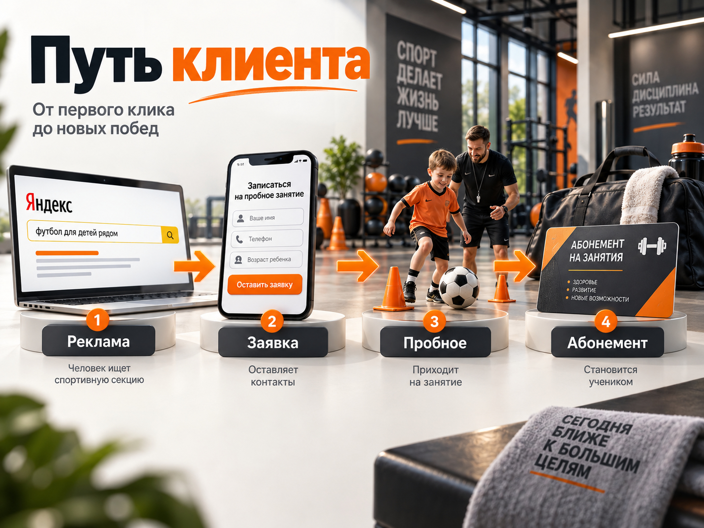
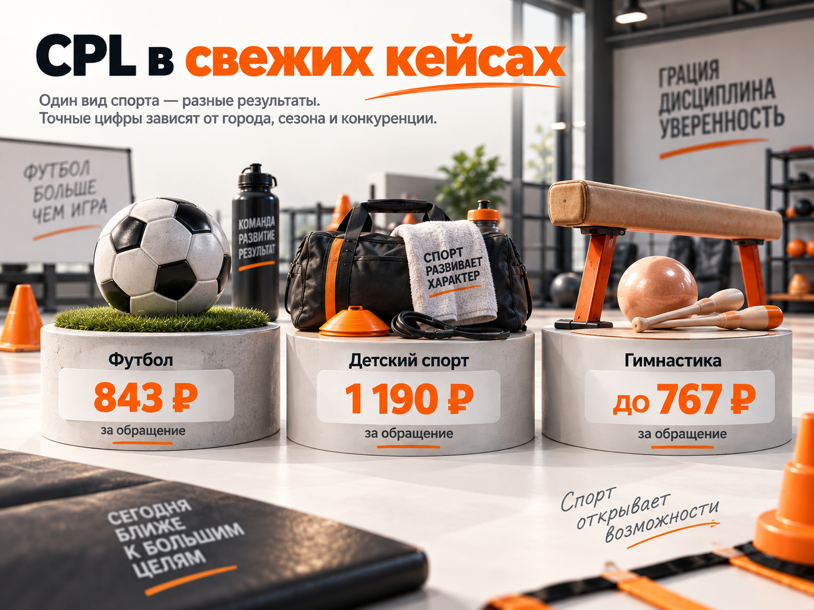

Блог о платном трафике
Продвижение спортивных секций и организаций через Яндекс Директ
Спортивную секцию, частную спортивную школу, академию или клуб с регулярным набором в группы можно продвигать практически по одной модели. Человек ищет подходящий вид спорта, сравнивает расположение, расписание, тренеров и стоимость, записывается на пробное занятие и только после этого покупает абонемент.
Поэтому основной результат рекламы здесь - не клик и даже не заявка сама по себе. Рабочая воронка выглядит так:
Именно по последнему этапу стоит оценивать экономику продвижения.
Эта схема подходит спортивным секциям, школам, академиям, клубам и другим организациям, которые набирают детей или взрослых на регулярные платные занятия. Если задача спортивной организации заключается в поиске спонсоров, продаже билетов на соревнования или продвижении профессиональной команды, воронка будет другой.

Почему спортивные секции удобно объединить со спортивными организациями
С точки зрения рекламы различия между частной футбольной школой, секцией единоборств, школой гимнастики и спортивным клубом часто меньше, чем кажется.
У них одинаковые основные ограничения:
- клиент должен регулярно добираться до места занятий;
- выбор сильно зависит от района;
- группы имеют ограниченную вместимость;
- важны возраст и уровень подготовки;
- решение часто принимается не сразу;
- у детских направлений покупателем фактически является родитель;
- перед покупкой абонемента человеку проще согласиться на пробное занятие.
Поэтому рекламировать нужно не абстрактную организацию, а конкретное предложение: вид спорта, возраст, район, расписание и ближайший следующий шаг.
Например:
«Футбол для детей 6-9 лет в Советском районе. Первое занятие бесплатно»
обычно понятнее, чем:
«Спортивная академия для гармоничного развития вашего ребенка».
Спрос на спортивные секции есть, но он сильно локализован
В исследовании родителей школьников, опубликованном в августе 2026 года, спорт оказался самым популярным направлением дополнительных занятий: спортивные секции посещали дети 66% опрошенных родителей.
Отдельный срез Wordstat за 8 июля - 6 августа 2026 года показывает по России 9 444 широких показа по формулировке «спортивные секции для детей». Точная частота этой конкретной фразы составляла только 291 показ. Это хороший пример того, почему нельзя строить семантику вокруг одного запроса: реальный спрос распределен по видам спорта, возрастам, районам и формулировкам вроде «футбол для ребенка», «секция бокса рядом», «гимнастика для девочки 5 лет».
Для рекламной кампании это скорее плюс. Вместо борьбы только за несколько очевидных высокочастотных запросов можно собирать большое количество конкретных комбинаций.
География для секции важнее широкого охвата
Человек может проехать через весь город к хорошему стоматологу или автосервису, но возить ребенка на тренировку три раза в неделю через полгорода значительно сложнее.
Поэтому для спортивной секции конкуренция фактически идет не со всем городом, а с организациями в разумной транспортной доступности.
В Яндекс Директе можно задавать показы вокруг конкретного адреса в радиусе от 0,5 до 10 км и выбирать аудиторию, которая живет, работает, находится рядом или регулярно бывает в этой зоне.
Радиус нельзя выбирать автоматически по принципу «3 км подходит всем». В центре Москвы три километра и три километра в небольшом городе - совершенно разная доступность.
Я бы смотрел на фактическую логистику:
- сколько времени родители готовы ехать до секции;
- есть ли удобный общественный транспорт;
- где находятся школы и жилые кварталы;
- куда люди едут после работы;
- насколько уникально направление;
- есть ли рядом прямые конкуренты.
Чем массовее вид спорта, тем обычно важнее близость. За уникальным тренером или редким направлением люди могут ехать значительно дальше.
Для организации с несколькими филиалами географию лучше анализировать отдельно по каждой точке.
Сезонность нужно учитывать до запуска рекламы
У детского спорта выраженный сезон набора. В свежих отраслевых материалах 2026 года основным пиком называют август и сентябрь. В январе возникает вторая волна, а в мае-июне появляется отдельный спрос на лагеря, сборы и летние программы.
Поэтому запускать рекламу осеннего набора только 1 сентября поздно.
Рациональнее использовать июль и первую половину августа для подготовки и тестов, затем усиливать кампанию по мере роста спроса.
В объявлениях в разные периоды меняется и предложение:
| Период | Что продвигать |
|---|---|
| Июль - август | Набор в группы на новый сезон |
| Конец августа - сентябрь | Пробные занятия, свободные места, расписание |
| Январь - февраль | Дополнительный набор, новые группы |
| Май - июнь | Сборы, лагеря, летние интенсивы |
| Остальное время | Текущий набор и освободившиеся места |
У взрослых спортивных направлений сезонность может отличаться. Там сильнее работают новогодняя мотивация, подготовка к лету, соревнования и индивидуальные особенности конкретного вида спорта.
Что должно быть на сайте спортивной секции
Главная задача сайта - снять вопросы, которые человек задаст до записи.
Минимально я бы показывал:
- вид спорта и возраст;
- адрес и карту;
- реальные фотографии зала;
- тренеров и их квалификацию;
- расписание;
- стоимость;
- формат занятий;
- размер групп;
- возможность пробного занятия;
- отзывы;
- результаты учеников, если они действительно важны для выбора;
- понятную кнопку записи.
Для организации с несколькими филиалами человек должен быстро понять, где находится ближайший.
Не стоит заставлять родителя сначала оставлять телефон только ради того, чтобы узнать цену или расписание. В локальной массовой нише конкурента легко открыть в соседней вкладке.
Оффер лучше строить вокруг первого простого действия.
Например:
- бесплатное пробное занятие;
- пробная тренировка за небольшую фиксированную сумму;
- открытая тренировка;
- диагностика уровня подготовки;
- знакомство с тренером;
- запись в новую группу.
Человеку психологически проще попробовать секцию, чем сразу купить длительный абонемент.
Как настроить Яндекс Директ для спортивной секции
Я бы рассматривал четыре основных направления внутри экосистемы Яндекса:
- Поиск.
- РСЯ.
- Мастер кампаний или ЕПК с алгоритмическим подбором аудитории.
- Продвижение организации в Картах.
Их не нужно обязательно запускать одновременно.
Для небольшого локального проекта гораздо полезнее получить достаточно статистики в одной-двух кампаниях, чем разделить бюджет между десятью источниками.
Поиск Яндекса
Поиск работает с уже сформированной потребностью.
Основные группы запросов:
Вид спорта
- футбольная школа;
- секция бокса;
- художественная гимнастика;
- плавание для детей.
Вид спорта + аудитория
- футбол для детей;
- бокс для начинающих взрослых;
- гимнастика для девочек 5 лет.
Вид спорта + география
- секция карате в Бутово;
- футбол для детей Красногорск;
- гимнастика рядом с метро.
Общие категорийные запросы
- спортивная секция для ребенка;
- куда отдать ребенка заниматься спортом;
- спортивные школы рядом.
Чем ближе запрос к конкретной услуге, тем проще сделать релевантное объявление и посадочную страницу.
После запуска необходимо регулярно смотреть реальные поисковые запросы. Автотаргетинг способен находить полезные дополнительные формулировки, но одновременно может расширять трафик дальше, чем нужно бизнесу.
Подробнее принцип работы такой рекламы я разбирал в статье «Как настроить Яндекс Директ в 2026 году».
РСЯ
Рекламная сеть работает иначе. Здесь человеку не обязательно прямо сейчас вводить запрос «секция футбола».
В Директе доступны краткосрочные интересы и привычки. Система использует актуальные поведенческие сигналы и позволяет описывать аудиторию через интересы, сайты, приложения и другие признаки. Этот таргетинг работает в сетях.
Для спортивной секции можно тестировать отдельные аудитории:
- родители детей подходящего возраста;
- люди, интересующиеся конкретным видом спорта;
- посетители тематических ресурсов;
- пользователи, которые недавно искали детские занятия;
- посетители собственного сайта;
- база существующих или бывших клиентов.
Но я бы не пытался сразу создать десятки узких групп. При небольшом локальном объеме аудитории сильное дробление быстро лишает алгоритмы статистики.
Отдельно имеет смысл тестировать разные креативы:
- занятие в зале;
- тренер;
- группа;
- спортивный инвентарь;
- результат занятия;
- пробная тренировка;
- конкретный возраст.
Для родителей рекламировать только кубки и медали не всегда правильно. Для части аудитории значительно важнее безопасность, развитие ребенка, отношение тренера, удобное время и расстояние до зала.
Мастер кампаний
Для небольших секций Мастер кампаний может оказаться хорошим первым тестом. Он позволяет алгоритму одновременно работать с различными площадками и искать аудиторию шире очевидного списка ключевых слов.
При этом автоматизация не означает отсутствие контроля.
Нужно анализировать:
- реальные запросы;
- площадки;
- качество обращений;
- стоимость пробной тренировки;
- фактические посещения;
- продажи абонементов.
Подробнее этот формат разобран отдельно в статье «Мастер кампаний Яндекс Директ».
Яндекс Карты
Для локальной спортивной организации Карты особенно важны.
Яндекс позволяет продвигать организацию непосредственно в Картах, списке организаций в поиске и других сервисах. Карточки могут отображаться по поисковым запросам и при просмотре карты.
До покупки рекламы сама карточка должна быть нормально заполнена:
- правильная категория;
- адрес;
- телефон;
- расписание;
- фотографии;
- цены;
- услуги;
- ссылка на сайт;
- отзывы.
Для спортивных секций Яндекс отдельно допускает размещение организаций, которые регулярно проводят занятия в арендованных спорткомплексах, школах или бассейнах, если выполняются требования к подтверждению места занятий. Для организации с несколькими объектами можно создать сеть.
Карты особенно важны для запросов с локальным намерением: «рядом», название района, метро или конкретная улица.
На какую цель оптимизировать рекламу
Самая простая цель - отправка формы.
Но именно здесь часто появляется ошибка.
Человек может оставить номер и:
- не ответить на звонок;
- отказаться после разговора;
- записаться и не прийти;
- прийти на пробное занятие и не купить абонемент.
Поэтому рекламная воронка должна постепенно становиться глубже:
заявка -> подтвержденная запись -> посещение -> абонемент.
Если CRM позволяет передавать эти этапы обратно в Метрику, реклама начинает получать информацию не только о количестве форм, но и о качестве лидов.
Механика передачи таких событий подробно разобрана в статье «Офлайн-конверсии в Яндекс Директ и Метрике».
При небольшом количестве данных не стоит сразу оптимизировать кампанию только на покупку абонемента. Если продаж несколько в месяц, сигнал для алгоритма будет слишком редким.
Яндекс рекомендует оценивать работу стратегии «Максимум конверсий» после периода обучения, а при недостатке конверсий отдельно проверять настройки и объем данных. Для пакетных стратегий Яндекс указывает ориентир не менее 10 конверсий в неделю суммарно по объединенным кампаниям.
Поэтому выбор цели зависит не от того, какая цель выглядит правильнее в теории, а от реального количества событий.
Что показывают свежие кейсы

Единой «средней стоимости заявки на спортивную секцию» я бы не использовал. Вид спорта, город, сезон и конкуренция меняют результат кратно.
В опубликованном в 2026 году проекте по детскому спорту Яндекс Директ принес 452 целевые заявки примерно по 1 190 ₽. Внутри проекта стоимость обращения по разным спортивным направлениям различалась примерно от 500 ₽ до 3 100 ₽. Это хорошо показывает, насколько опасно переносить одну цифру на всю нишу.
В другом свежем кейсе московской футбольной школы за первый месяц получили 61 обращение при рекламных расходах 51 407 ₽. Пересчитанный CPL составляет около 843 ₽. Автор отмечает, что 29 обращений были звонками, 32 - формами, а примерно каждая третья-четвертая заявка превращалась в клиента. Поиск оказался основным источником: РСЯ и Мастер кампаний вместе дали только 13 из 61 заявки.
В кейсе детской студии гимнастики, опубликованном в декабре 2025 года, одновременно тестировали Поиск и РСЯ. Общая стоимость точной конверсии составила до 767 ₽, а в РСЯ авторы проекта указывали около 373 ₽ за лид. Это единичный результат, поэтому считать 373 ₽ нормой для спортивных секций нельзя.
Получается полезный вывод: свежие кейсы подтверждают работоспособность Директа для спортивных секций, но одновременно показывают большой разброс результатов.
Какой CPL заложить в первоначальный прогноз
Без конкретного города, вида спорта, стоимости абонемента и сайта точный прогноз невозможен.
Для предварительного расчета обычной локальной секции я бы заложил 800-1 500 ₽ за обращение как рабочий диапазон для проверки гипотезы.
Это не средняя цена по рынку.
Это расчетный диапазон, основанный на нескольких опубликованных кейсах и намеренно оставляющий запас относительно лучших результатов.
Для дорогой географии, единоборств, узких направлений или слабого предложения фактический CPL вполне может выйти в диапазон 1 500-3 000 ₽ и выше.
Если экономика бизнеса работает только при заявке за 400 ₽, это нужно увидеть до запуска, а не после расходования бюджета.
Прогноз лидов и новых клиентов
Для примера возьмем:
- CPL: 800-1 500 ₽;
- конверсию обращения в покупателя: 25%.
Конверсия 25% выбрана не как рыночная норма, а как осторожное расчетное допущение. В свежем кейсе футбольной школы автор сообщал о превращении примерно каждой 3-4-й заявки в клиента, то есть около 25-33%.
Тогда получаем:
| Рекламный бюджет | Прогноз обращений | Новые клиенты при 25% |
|---|---|---|
| 30 000 ₽ | 20-38 | 5-9 |
| 50 000 ₽ | 33-62 | 8-16 |
| 80 000 ₽ | 53-100 | 13-25 |
Расчетный CAC нового ученика составит примерно:
800 ₽ / 25% = 3 200 ₽
и
1 500 ₽ / 25% = 6 000 ₽.
То есть для первого медиаплана разумно проверять не только CPL 800-1 500 ₽, но и стоимость реально купившего абонемент клиента порядка 3 200-6 000 ₽ при выбранном допущении.
Для конкретного проекта эту цифру нужно сравнить с его собственной экономикой.
Почему конверсия после заявки важнее CPL
Предположим, обе рекламные кампании дают заявку по 1 200 ₽.
Но в первой покупает абонемент 15% лидов:
1 200 / 0,15 = 8 000 ₽ за клиента.
Во второй покупает 25%:
1 200 / 0,25 = 4 800 ₽.
А при конверсии 35%:
1 200 / 0,35 = 3 429 ₽.
Стоимость рекламы вообще не изменилась, а стоимость нового ученика различается более чем в два раза.
Именно поэтому проблему нельзя всегда решать внутри Директа.
Если люди массово записываются на пробное занятие, но не приходят, нужно работать с подтверждением записи и напоминаниями.
Если приходят, но не покупают, нужно смотреть на саму тренировку, тренера, цену, расписание и продажи.
Если заявок мало при нормальном целевом трафике, тогда уже проверяется сайт и предложение.
Как рассчитать допустимую стоимость заявки
Начинать лучше с максимально допустимой стоимости нового клиента.
Формула:
допустимый CPL = допустимый CAC × конверсия лида в клиента.
Например, бизнес готов платить за нового ученика не больше 5 000 ₽.
Если из обращения в абонемент переходит 25% людей:
5 000 × 0,25 = 1 250 ₽.
Значит, целевой CPL должен быть около 1 250 ₽ или ниже.
Если текущая реклама дает заявки по 1 800 ₽, бессмысленно просто говорить, что «Директ работает дорого». Нужно либо снижать CPL, либо повышать конверсию заявки в оплату, либо увеличивать допустимый CAC за счет LTV клиента.
При расчете LTV лучше использовать не стоимость одного месячного абонемента, а фактическую маржу за весь период занятий среднего клиента.
Подробнее сам принцип медиаплана я разбирал в статье «Прогноз бюджета Яндекс Директ».
Когда рекламу можно масштабировать
Масштабировать кампанию стоит не тогда, когда найден дешевый CPL, а когда понятна вся цепочка:
расход -> лид -> пробное занятие -> посещение -> абонемент -> выручка.
Допустим:
- реклама дает много заявок;
- CPL низкий;
- до пробного занятия доходит только половина;
- покупает абонемент один из десяти посетителей.
Увеличение бюджета просто масштабирует проблему.
Сначала нужно найти слабый этап.
Поэтому я бы фиксировал минимум такие показатели:
| Этап | Метрика |
|---|---|
| Реклама | Расход |
| Трафик | Клики, CPC |
| Обращение | Лиды, CPL |
| Запись | Подтвержденные пробные |
| Посещение | Фактически пришедшие |
| Продажа | Новые абонементы |
| Бизнес | CAC и выручка |
Если лидов много, но они не подходят, отдельно нужно смотреть качество обращений, реальные запросы и источники. Подробно эта проблема разобрана в статье «Нецелевые и некачественные лиды из Яндекс Директа».
Основные ошибки при продвижении спортивных секций
Рекламировать весь город
Для массовой секции это часто означает оплату кликов от людей, которым неудобно регулярно ездить на занятия.
Смешивать детей и взрослых
Мотивы совершенно разные. Родитель выбирает безопасность, тренера, развитие ребенка и логистику. Взрослый может искать снижение веса, соревнования, самооборону, здоровье или просто интересный вид активности.
Смешивать разные виды спорта
Если организация предлагает футбол, гимнастику и единоборства, запросы, объявления и посадочные предложения должны соответствовать конкретному направлению.
Продавать сразу длительный абонемент
Пробное занятие снижает первый барьер и позволяет человеку сначала оценить зал и тренера.
Не показывать цену и расписание
В локальной нише пользователь сравнивает несколько организаций одновременно. Чем сложнее найти базовую информацию, тем проще выбрать конкурента.
Считать каждую форму хорошим лидом
Заявка еще не означает пробное занятие, а пробное занятие еще не означает продажу.
Запускаться только в сентябре
К моменту пика спроса часть родителей уже выбрала секцию. Подготовку и первые тесты лучше начинать заранее.
Слишком сильно дробить кампании
У локальной секции и без того ограниченная аудитория. Если маленький бюджет разделить по множеству кампаний, целей и сегментов, каждая часть получит слишком мало статистики.
Пошаговая схема запуска продвижения
- Определить направления и группы, которые действительно нужно заполнить.
- Посчитать максимально допустимую стоимость нового ученика.
- Определить приемлемый CPL через конверсию заявки в покупку.
- Проверить карточку организации в Яндекс Картах.
- Подготовить посадочную страницу с ценами, расписанием, тренерами и адресом.
- Настроить Метрику, формы, звонки и основные цели.
- Собрать поисковый спрос по видам спорта, возрастам и географии.
- Настроить локальную географию вокруг каждого филиала.
- Запустить Поиск и одну дополнительную гипотезу: РСЯ или Мастер кампаний.
- Проверять реальные поисковые запросы и качество лидов.
- Считать отдельно записи, посещения пробных занятий и продажи абонементов.
- Передавать подтвержденные результаты обратно в аналитику, когда накопится достаточно данных.
- Увеличивать бюджет только после проверки CAC, а не только CPL.
- Заранее усиливать рекламу перед сезонным набором.
Какой бюджет закладывать на старт
Для локальной спортивной секции нет смысла выбирать бюджет просто по принципу «попробуем на 10 000 ₽».
Бюджет лучше считать от нужного количества лидов.
Если для первичного вывода нужно получить примерно 30 обращений:
- при CPL 800 ₽ потребуется около 24 000 ₽;
- при CPL 1 200 ₽ - около 36 000 ₽;
- при CPL 1 500 ₽ - около 45 000 ₽.
Поэтому 30 000-50 000 ₽ рекламного бюджета на месяц выглядит разумным расчетным диапазоном для первоначального теста одной локальной точки, если спрос позволяет получить нужный объем.
В небольшом городе бюджет может оказаться ниже просто потому, что доступного поискового спроса физически недостаточно. В Москве или при нескольких филиалах он может быть значительно выше.
Точный медиаплан нужно строить уже по конкретному городу, виду спорта, точкам и прогнозу трафика.
Итог
Яндекс Директ хорошо подходит спортивным секциям и организациям с регулярным набором в группы, потому что позволяет одновременно работать со сформированным поисковым спросом, локальной аудиторией, РСЯ и Яндекс Картами.
Для первоначального прогноза можно использовать рабочий диапазон около 800-1 500 ₽ за обращение, понимая, что это не норматив рынка и отдельные направления могут выходить далеко за его пределы.
При бюджете 50 000 ₽ такой расчет дает примерно 33-62 обращения. При конверсии 25% это около 8-16 новых клиентов и ориентировочный CAC 3 200-6 000 ₽.
Но окончательный критерий эффективности - не количество заявок. Реклама должна приводить людей, которые записываются, действительно приходят на тренировку и покупают абонемент.
Если нужен запуск Яндекс Директа для спортивной секции или организации, я занимаюсь настройкой и ведением рекламы с привязкой к заявкам, качеству лидов и дальнейшим продажам. Подробнее об условиях работы - на naklikay.ru.